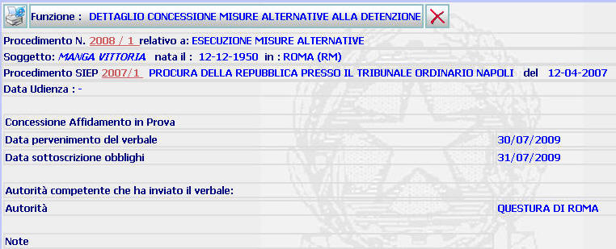

DETTAGLIO INIZIO MISURA ALTERNATIVA: La funzione consente di visualizzare il dettaglio dell'inizio della misura alternativa, inserito attraverso la funzione inizio misura alternativa
LE MASCHERE VIDEO
La funzione viene realizzata attraverso la maschera seguente in cui compare il dettaglio dell'inizio e termine della misura alternativa

COME FARE PER ...
| Per visualizzare il dettaglio del procedimento Sius l'utente deve cliccare sul link relativo all'Anno/Numero del procedimento Sius evidenziato in rosso; |

| Per visualizzare il dettaglio del soggetto l'utente deve cliccare sul link relativo al cognome/nome del soggetto evidenziato in rosso; |

| Per visualizzare il dettaglio del procedimento Siep l'utente deve cliccare sul link relativo all' Anno/Numero del procedimento Siep evidenziato in rosso; |

| Per
cancellare i dati relativi all'inizio
e termine della misura alternativa l'utente deve cliccare sul pulsante
|
PULSANTI
Sono presenti i pulsanti
 e
e
 , facenti parte del gruppo di
pulsanti di "Uso Comune"
, facenti parte del gruppo di
pulsanti di "Uso Comune"